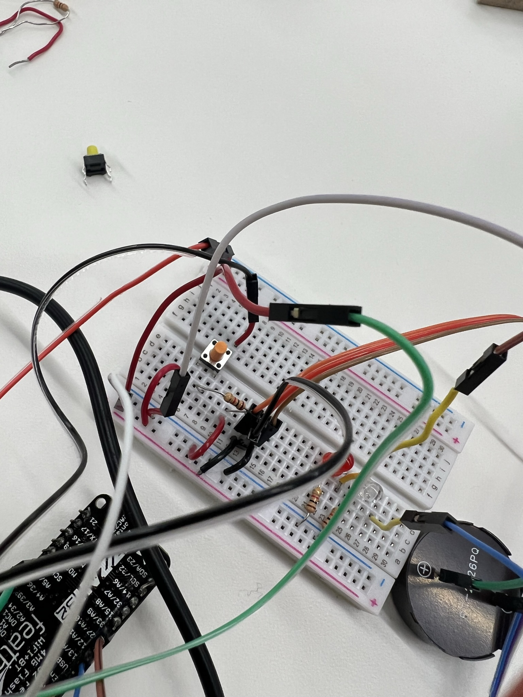

### Final Week
We made it this far. Congratulations to us!
After several hours, days, weeks (and some tears), we finally finished our final project.
Just as a reminder. The idea was to help my friends Lerato, Jordan and Djibril and their hydroponics farm because they had the issue that they couldn't tell when the temperature had dropped below a certain level.
For this project, I used a total of three inputs:
<ul>
<li>a button and a temperature sensor</li>
<li>a temperature sensor</li>
<li>a LOT of hope and patience</li>
</ul>
I also use a total of four outputs
<ul>
<li>a blue and red LED to signal the ideal and non-ideal state of the temperature respectively</li>
<li>a buzzer in form of a piezzo </li>
<li>a servo motor</li>
<li>JOY when it finally worked</li>
</ul>
I also used an esp32 Huzzah Feather as well as a breadboard to connect everything.
Just a small heads up, I will be talking about temperature rising above a certain value because for the sake of this project's demonstration, it was easier to increase the sensor value by touching it and seeing a reaction than decreasing it.
Before we dive into the details of how everything was connected, here is a workthrough of how the project was supposed to work
<li>the temperature sensor reads a value</li>
<li>a line of code converts that value first into voltage and then into a temperature</li>
<li>if the temperature is below 13 (which was what I had considered the ideal temperature to be), then a blue led would light up</li>
pro tip here: first read the baseline temperature and adjust your if statement accordingly. Mine kept changing depending on which room I was running the program from and changed from 25 to 13 degrees celsius.
<li>if the temperature reads a value above 13, turn on the red LED, ring the alarm and wait for the button to be pressed to indicate that the person has been notified and also turn off the alarm, send a notification on their phone and also turn on the motor ( I am imagining that the motor can serve to proceed to cool up the pond to a desired temperature)
</li>
<li> After the button is pressed, hit the reset button to reset the program so it can take it new values</li>
</ul>
Now that we have the workflow down. I can reveal to you the magic arduino code that makes it work.
However, a small confession. I was not able to make both the button to turn the alarm off and send the notification to the phone. I was able to do both task, but separately. I will show you the code for both and hopefully you will be able to incorporate both into one program (and then please let me know).
First: the code with the button pressed to send the notification on the phone as well as activating the Red LED, the piezo and the motor:
<pre>
<code>
#include <WiFi.h> //Including wifi.h library it will take care of all wifi related task
#include <HTTPClient.h> //Including HTTPClient.h library to use all api
int button_count; //it will store total number of button press count
const int BUTTON_PIN = A4;
//declarations from metro program
int Ena = 7;
volatile byte state = LOW;
int buzzerPin = 4; // Positive buzzer pin connected to pin 5
long max_frequency = 2500; // Max frequency for the buzzer
long frequency; // The frequency to buzz the buzzer
const int sensorPin = A3; //Input from temperature resistor connected to A0
//end of declarations from metro
const char* ssid = "MAKERSPACE"; //Add your WiFi ssid
const char* password = "12345678"; //Add your WiFi password
String apiKey = "275914"; //Add your Token number that bot has sent you on signal messenger
String phone_number = "+18573201564"; //Add your signal app registered phone number (same number that bot send you in url)
String url; //url String will be used to store the final generated URL
String send_message;
void setup() {
pinMode(BUTTON_PIN, INPUT_PULLUP); // set arduino pin to input pull-up mode
Serial.begin(115200);
WiFi.begin(ssid, password); // Try to connect with the given SSID and PSS
Serial.println("Connecting to WiFi");
while (WiFi.status() != WL_CONNECTED) { // Wait until WiFi is connected
delay(500);
Serial.print(".");
}
//voidsetup from metro
pinMode(buzzerPin, OUTPUT); // set a pin for buzzer output
pinMode(A3, INPUT); // for the sensor pin
pinMode(14, OUTPUT); // define pin 14 for A-1B (direction)
pinMode(32, OUTPUT); // define pin 32 for A-1A (PWM Speed)
pinMode(33, OUTPUT); // 33= red LED
pinMode(12, OUTPUT); // 12= blue LED
//analogWrite(Ena, 255);
//end of voidsetup from metro
Serial.println();
Serial.println("Connected to the WiFi network"); // Print wifi connect message
}
void loop()
{
int buttonstate = digitalRead (BUTTON_PIN);
Serial.println (buttonstate);
if (buttonstate == 0) {
onButton1Pressed();
//ledcWrite(buzzerPin,0);
}
//voidloop from metro
int sensorVal = analogRead(sensorPin);
float voltage = (sensorVal / 4096.0) * 3.3;
// Serial.print("sensor val: "); Serial.println(sensorVal);
Serial.print("Temperature in Celsius: ");
// convert the voltage to temperature in degrees
float temperature = (voltage - .5) * 100;
// Serial.print("voltage: "); Serial.println(voltage);
Serial.println(temperature);
float temperatureF = (temperature * 9.0 / 5.0) + 32.0;
Serial.print(" . Degrees in Fahrenheit: "); Serial.print(temperatureF);
frequency = (sensorVal * max_frequency) / 20;
// If the temperature is below 25 Celsius, turn off the red LED, turn on the green LED and turn the motor off
if (temperature < 13) {
digitalWrite(12, HIGH);
digitalWrite(33, LOW);
digitalWrite(32, LOW);
digitalWrite(14, LOW);
}
// If the temperature is above 25 Celsius, turn on the red LED, turn off the green LED and turn on the motor
if (temperature > 13)
{
buzz(buzzerPin, frequency, 10);
//send notification to phone
digitalWrite(12, LOW);
digitalWrite(33, HIGH);
digitalWrite(14, LOW);
digitalWrite(32, HIGH);
//Serial.write(mystr, 5); //Write the serial data
delay(1000);
}
//end of voidloop from metro
delay(1);
}
void buzz(int targetPin, long frequency, long length) {
long delayValue = 1000000 / frequency / 2;
long numCycles = frequency * length / 1000;
for (long i = 0; i < numCycles; i++) {
digitalWrite(targetPin, HIGH);
delayMicroseconds(delayValue);
digitalWrite(targetPin, LOW);
delayMicroseconds(delayValue);
}
}
// Callback function to be called when button1 is pressed
void onButton1Pressed()
{
button_count++;
send_message = "The temperature just rose = " //+ String(button_count);
Serial.println("button is pressed. The person is notified");
Serial.println(send_message);
message_to_signal(send_message); // Send send_message to Signal app
}
void message_to_signal(String message) // user define function to send meassage to Signal app
{
//adding all number, your api key, your message into one complete url
url = "https://api.callmebot.com/signal/send.php?phone=" + phone_number + "&apikey=" + apiKey + "&text=" + urlencode(message);
Serial.println (url);
postData(); // calling postData to run the above-generated url once so that you will receive a message.
}
void postData() //userDefine function used to call api(POST data)
{
int httpCode; // variable used to get the responce http code after calling api
HTTPClient http; // Declare object of class HTTPClient
http.begin(url); // begin the HTTPClient object with generated url
httpCode = http.POST(url); // Finaly Post the URL with this function and it will store the http code
if (httpCode == 200) // Check if the responce http code is 200
{
Serial.println("Sent ok."); // print message sent ok message
}
else // if response HTTP code is not 200 it means there is some error.
{
Serial.println("Error."); // print error message.
}
http.end(); // After calling API end the HTTP client object.
}
String urlencode(String str) // Function used for encoding the url
{
String encodedString = "";
char c;
char code0;
char code1;
char code2;
for (int i = 0; i < str.length(); i++) {
c = str.charAt(i);
if (c == ' ') {
encodedString += '+';
} else if (isalnum(c)) {
encodedString += c;
} else {
code1 = (c & 0xf) + '0';
if ((c & 0xf) > 9) {
code1 = (c & 0xf) - 10 + 'A';
}
c = (c >> 4) & 0xf;
code0 = c + '0';
if (c > 9) {
code0 = c - 10 + 'A';
}
code2 = '\0';
encodedString += '%';
encodedString += code0;
encodedString += code1;
//encodedString+=code2;
}
yield();
}
return encodedString;
}
</code>
</pre>
Then the code to turn off the alarm once pressed:
<pre>
<code>
/*
Created by ArduinoGetStarted.com
This example code is in the public domain
Tutorial page: https://arduinogetstarted.com/tutorials/arduino-button-toggle-led
*/
//use this code.from toggling led
// constants won't change
const int BUTTON_PIN = A4; // Arduino pin connected to button's pin
const int LED_PIN = 12; // Arduino pin connected to LED's pin
int channel = 0;
int resolution = 8;
// variables will change:
int buzzerState = LOW; // the current state of LED
int lastButtonState; // the previous state of button
int currentButtonState; // the current state of button
int buzzerPin = 4; // Positive buzzer pin connected to pin 5
long max_frequency = 2500; // Max frequency for the buzzer
long frequency = 500; // The frequency to buzz the buzzer
void setup() {
Serial.begin(9600); // initialize serial
pinMode(BUTTON_PIN, INPUT_PULLUP); // set arduino pin to input pull-up mode
pinMode(LED_PIN, OUTPUT); // set arduino pin to output mode
pinMode(buzzerPin, OUTPUT); // set a pin for buzzer output
currentButtonState = digitalRead(BUTTON_PIN);
ledcSetup(channel, frequency, resolution);
ledcAttachPin(4, channel);
}
void loop() {
ledcWriteTone(channel, frequency);
delay(100);
lastButtonState = currentButtonState; // save the last state
currentButtonState = digitalRead(BUTTON_PIN); // read new state
if (lastButtonState == HIGH && currentButtonState == LOW) {
Serial.println("The button is pressed");
// toggle state of LED
buzzerState = !buzzerState;
frequency = 0;
// control LED arccoding to the toggled state
ledcWrite(buzzerPin, 0);
delay(100);
}
/*buzz(buzzerPin, 2000, 10);*/
}
void buzz(int targetPin, long frequency, long length) {
long delayValue = 1000000 / frequency / 2;
long numCycles = frequency * length / 1000;
for (long i = 0; i < numCycles; i++) {
/*digitalWrite(targetPin, HIGH);
delayMicroseconds(delayValue);
digitalWrite(targetPin, LOW);
delayMicroseconds(delayValue);*/
ledcWriteTone(channel, frequency);
}
}
</code>
</pre>
Now here is a video showing how I connected everything (note: the button represented here was used to send the notification on the phone, not to turn off the alarm):
<video width="620" height="440" controls src="IMG_7857.mp4"></video>
And a picture of the circuitry for when the button was being used to stop the alarm:
<div class="column">

</div>
In order to send the message notification on my phone, I followed the tutorial found here: <a href="https://www.techtonions.com/signal-esp32-send-message-and-image/">Home</a>
Here is a screenshot of the message notifications I received:
<div class="column">
<img src="IMG_7857.jpeg" alt="Side view" style="width:100%">
</div>
Now here is what we all waited for. A video demonstrating the final project in action:
<video width="620" height="440" controls src="final_62800703e6426d00d67e17f4_640539.mp4"></video>
You can also access it using this <a href="/05_Week_5/Week5.html">link</a>
Major challenges:
1. Making the button work.
2. At first I had used a metro arduino uno and couldn't make it communicate with the esp32 until I switched every pin onto the esp32
Future improvements:
1. Make the button do the two tasks o
<h3>CREDITS</h3>
I honestly would not have done it without the tremendous help and patience of the TFs and classmates. But a very special shoutout to Nathan and Kassia!